|
Roda JC - Real Murcia (0-1) 10 augustus 2007
|
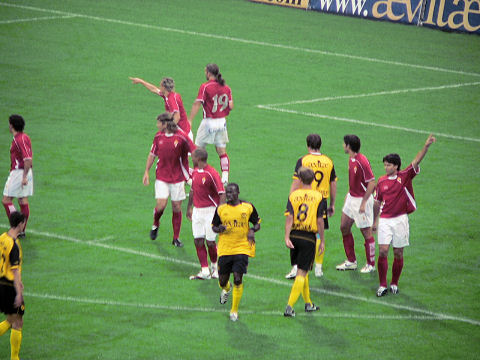
Binnen een week speelt Roda voor de tweede keer tegen een serieuze tegenstander
uit Spanje. Real Murcia is promovendus naar de primera division en speelde
eerder
deze week Anderlecht en Dender naar een resp. 0-6 en 0-1 nederlaag.
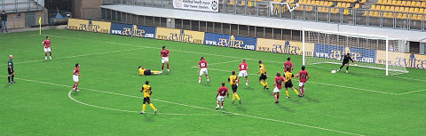
Roda begint met Castro, Sonkaya, De Fauw, Saeijs, De Jong, Bodor, Meeuwis,
Janssen, Bouchiba, Van Tornhout, Lamah.
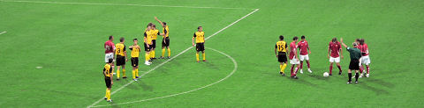
Scheidsrechter Jol floot een beetje kinderachtig en trad met name tegen Roda JC
te vaak op. 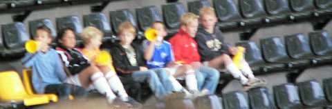
In de zouteloze eerste helft trok het getoeter van deze kinderen meer aandacht
dan
het veldspel.
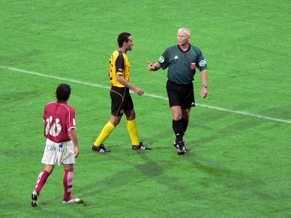
Jol als vredestichter tussen Bouchiba en Peña Romero.
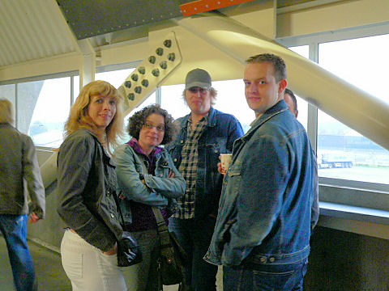
Toch nog redelijk blijde gezichten in de pauze.
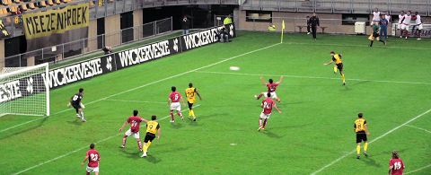
De tweede helft is leuker. Hier een mooie kans voor Sonkaya die echter hoog over
doel schiet. 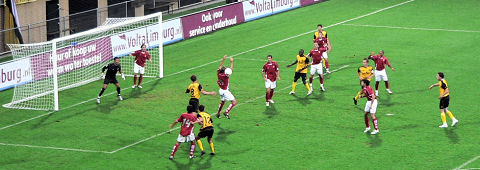
Deze "volley-bal" bleef onbestraft.
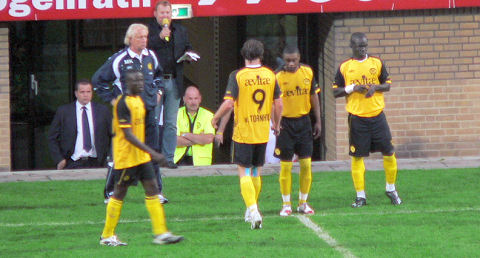
Na 60 min. verdwijnt Bodor voor Tioté en Van Tornhout voor Matondo.
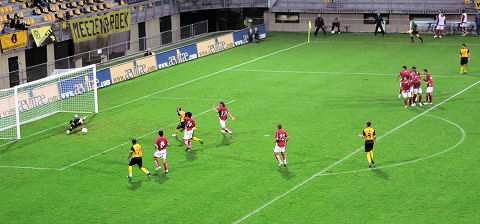
Na deze dubbele wissel neemt de druk van Roda meteen toe.
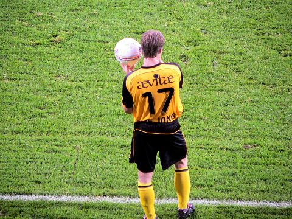
De Jong moet een tijdje wachten voordat hij in kan werpen vanwege een blessure
bij een Spanjaard.
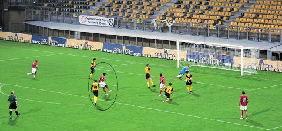
Na een balverlies aan de andere kant van het veld countert de Spaanse ploeg naar
deze treffer van Goitom: 0-1, (68').
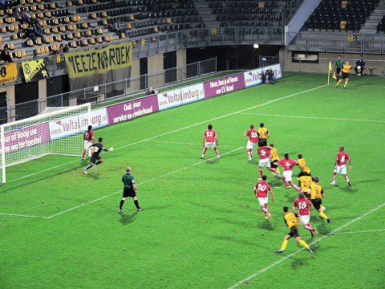
Roda zet nog meer druk en krijgt diverse corners zoals deze die genomen wordt
door Sibum. 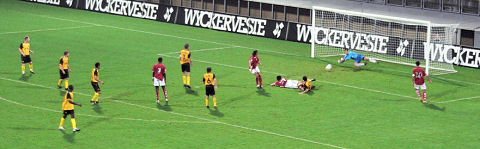
In de slotfase brengt Castro redding.
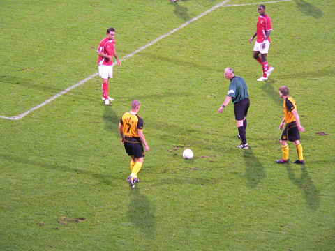
Deze vrije trap levert niks meer op. Roda verliest opnieuw van een Spaanse
tegenstander en mag zich gaan beraden hoe het enorme gebrek aan creativiteit
op te lossen. Opstelling:
Castro, Sonkaya, De Fauw (80. Van Kouwen), Saeijs, De Jong, Bodor (60. Tioté),
Meeuwis, Janssen (78. Sibum), Bouchiba, Van Tornhout (60. Matondo), Lamah
Scheidsrechter: Dick Jol
Toeschouwers: 1.500
© Koempels Pleasure Dome
|